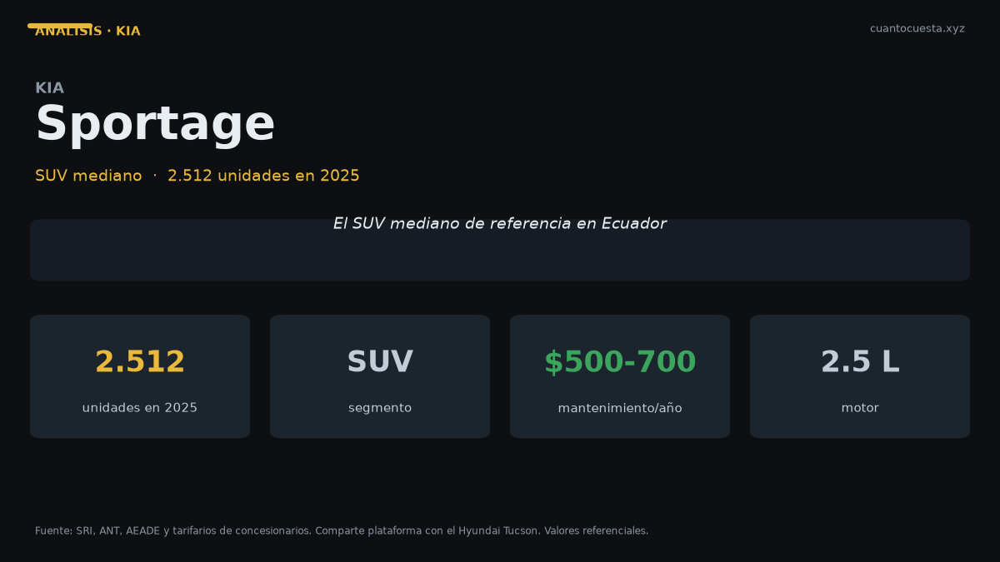

Kia Sportage en Ecuador: análisis completo, costos y veredicto
Vendió 2.512 unidades en 2025 y comparte plataforma con el Hyundai Tucson. Qué se sabe del precio, cuánto cuesta tenerlo y a quién le conviene.

El Kia Sportage vendió 2.512 unidades en 2025 y comparte plataforma con el Hyundai Tucson. Es un SUV mediano consolidado en Ecuador, con un volumen que lo pone por encima del Seltos (2.452) y por debajo del Sonet (3.593) dentro de la propia marca.
Aquí hay que decir algo con claridad desde el principio: Kia Ecuador no publica el precio del Sportage en las fuentes que consultamos. Este análisis no va a inventar una cifra. Lo que sí podemos hacer, y es más útil, es dimensionar el segmento, calcular el costo real de tener un SUV mediano en Ecuador y compararlo con su hermano de plataforma.
Compartir plataforma significa compartir estructura, distancia entre ejes y base mecánica. No significa equipamiento idéntico ni precios iguales. Es un punto de partida para comparar, no una equivalencia.
Ficha técnica
| Dato | Kia Sportage |
|---|---|
| Segmento | SUV mediano |
| Motor | No especificado públicamente |
| Potencia | No especificado públicamente |
| Torque | No especificado públicamente |
| Transmisión | No especificado (varía por versión) |
| Consumo homologado | No publicado en las fuentes consultadas |
| Dimensiones | No especificadas públicamente |
| Maletero | No especificado |
| Plataforma | Compartida con el Hyundai Tucson |
| Garantía | Confirmar la cobertura de la versión (Kia Ecuador ofrece 10 años o 160.000 km en varios modelos) |
| Precio | No especificado públicamente |
Si viniste buscando la potencia exacta, la respuesta honesta es que no está publicada en el material que revisamos. Pide estos cinco datos por escrito en la agencia: motor y cilindrada, potencia y torque, consumo homologado, número de airbags y cobertura de garantía.
Precio y versiones en Ecuador
| Referencia | Dato |
|---|---|
| Precio del Sportage | No especificado públicamente |
| Ficha del segmento: Hyundai Tucson | $32.499 a ~$40.000 |
| Unidades vendidas 2025 | 2.512 |
| Unidades 2025 del Tucson | 2.395 |
El Tucson sirve de brújula porque comparte plataforma: arranca en $32.499 y llega cerca de los $40.000. Un SUV mediano con esa base mecánica se mueve en ese rango de precio. No tomes esa cifra como el precio del Sportage: es la referencia del segmento donde compite.
Los precios varían por agencia, versión y promoción del mes. Cotiza al menos en tres concesionarios antes de decidir: en SUV medianos la diferencia entre agencias por la misma versión suele ser de cuatro cifras.
Cuánto cuesta mantenerlo
Escenario: 12.000 km al año, auto de alrededor de $34.000 (valor de referencia del segmento), combustible Extra o Ecopaís a $3,21 el galón y una estimación declarada de 11 km/l mixto para un SUV mediano. El consumo del Sportage no está publicado: la cifra es estimación, no dato oficial.
| Rubro anual | Rango estimado |
|---|---|
| Combustible (estimación 11 km/l) | ~$939 |
| Mantenimiento (aceite, filtros, alineación) | $400 – $700 |
| Matrícula (IPVM progresivo sobre avalúo alto) | $300 – $550 |
| Seguro (≈4% del valor) | ~$1.360 |
| Llantas (juego cada ~40.000 km) | $200 – $300 |
| Otros (lavado, imprevistos, multas) | $100 – $200 |
| Total anual | $3.299 – $4.049 |
| Equivalente mensual | $275 – $337 |
Dos sensibilidades importantes:
Octanaje. Si el manual de tu versión exige Súper a $4,89 el galón en lugar de Extra o Ecopaís a $3,21, el gasto en combustible sube a cerca de $1.617 al año. Son casi $680 más solo por el tipo de combustible. Verifica ese punto en la agencia antes de comprar: es la diferencia de costo operativo más grande de todo el cuadro.
Matrícula. El IPVM del SRI es progresivo, del 0,5% al 6% sobre el avalúo, y el avalúo se deprecia cerca del 20% anual con un piso del 10% del PVP. En un vehículo de $34.000, la matrícula supera ampliamente el promedio de ~$180 anual que se cita para autos populares.
Para comparar contra tu taller: aceite y filtro $50–$90, alineación y balanceo $30–$50, filtro de aire $20–$40, filtro de combustible $30–$60, líquido de frenos $40–$70, bujías $50–$100, pastillas delanteras $80–$150, amortiguadores $200–$350, batería $100–$200, llanta $120–$250, correa de distribución $250–$400.
El mantenimiento anual varía más por marca que por tamaño de vehículo: Toyota Hilux o RAV4 se mueven entre $300 y $600; Mazda CX-5 entre $500 y $700; Jeep entre $700 y $1.000; RAM 1500 entre $800 y $1.200. Al cotizar un SUV mediano, pide el tarifario de los primeros 50.000 km.
Equipamiento y seguridad
No hay datos por versión disponibles en las fuentes consultadas, así que no vamos a construir una lista de equipamiento especulativa.
Lo verificable es la plataforma compartida con el Hyundai Tucson. El Tucson ofrece 6 airbags y garantía de 5 años sin límite de kilometraje. Compartir plataforma implica que la base estructural —distancia entre ejes, arquitectura de suspensión, puntos de anclaje— proviene del mismo desarrollo. El equipamiento de seguridad interior, en cambio, se define por versión y por mercado, y ahí no se puede extrapolar.
Recomendación práctica: al cotizar, pide que te confirmen por escrito el número de airbags, la presencia de control de estabilidad y asistente de arranque en pendiente, y si la garantía tiene límite de kilometraje. Son los tres puntos donde un SUV mediano se diferencia de otro.
Para quién es y para quién no
Es para ti si:
- Necesitas espacio real para cinco pasajeros y equipaje
- Usas la plataforma mecánica probada del Tucson con la red de Kia
- Haces carretera de forma habitual y quieres peso y aplomo de SUV mediano
- Puedes asumir un costo de operación de $275 a $337 al mes
No es para ti si:
- Tu presupuesto de compra está por debajo de $30.000: el Sonet y el Seltos juegan ahí
- Haces 90% ciudad y te importa el consumo: un subcompacto rinde más
- Necesitas el menor costo de operación posible: mira un sedán de $15.799
- No puedes esperar una cotización por escrito antes de comprar
Comparación con su rival directo
| Modelo | Precio | Unidades 2025 | Dato clave |
|---|---|---|---|
| Kia Sportage | No especificado públicamente | 2.512 | Plataforma compartida con el Tucson |
| Hyundai Tucson | $32.499 – ~$40.000 | 2.395 | 6 airbags, garantía 5 años sin límite de km |
| Kia Seltos | No especificado públicamente | 2.452 | Un escalón abajo en tamaño |
Sportage y Tucson son el mismo hueso con distinta piel: vendieron 2.512 y 2.395 unidades respectivamente en 2025, con 117 unidades de diferencia. En la práctica, la decisión entre ambos se reduce a precio cotizado, red de servicio local y equipamiento de la versión específica que te ofrezcan.
De los tres, el Tucson es el único con precio y garantía publicados: $32.499 de entrada y 5 años sin límite de kilometraje. Ese dato, más que cualquier ficha técnica, es lo que debería decidir si el Sportage te conviene o no.
Veredicto
El Kia Sportage es una apuesta sólida en SUV mediano, con la advertencia de que su precio no está publicado. Vendió 2.512 unidades en 2025, comparte plataforma con un modelo que vende prácticamente lo mismo, y su costo de operación razonable se ubica entre $275 y $337 al mes.
Antes de firmar, resuelve dos cosas: el octanaje que exige tu versión (la diferencia es de $680 al año si necesitas Súper) y la cobertura exacta de garantía. Con esos dos datos en mano, la decisión se vuelve aritmética.
Si el precio del Sportage llega cómodo, compra. Si está por encima de tu presupuesto, el Seltos cubre el escalón siguiente dentro de la misma marca.
Precios referenciales de lista a septiembre de 2026. El precio y las especificaciones del Kia Sportage no están publicados en las fuentes consultadas; los valores de costo son estimaciones declaradas del segmento. Varían por agencia, versión y promoción. No constituye asesoría financiera.
Sigue leyendo
Chery Arrizo en Ecuador: análisis completo, costos y veredicto
Vendió 1.534 unidades en 2025 y Chery creció 50,1% en el primer semestre de 2026. Precio, repue
Chevrolet D-Max en Ecuador: análisis completo, costos y veredicto
Es la camioneta más vendida de Ecuador con 5.515 unidades en 2025. Precio, costo real de operac
Chevrolet Groove en Ecuador: análisis completo, costos y veredicto
El SUV más vendido de Ecuador: 4.063 unidades en 2025. Precio desde $19.999, cuota de $309 al m
GWM Poer en Ecuador: análisis completo, costos y veredicto
La camioneta ensamblada en Ambato que rompió el precio del 4x4: 4.092 unidades en 2025. Precio,
Hyundai Grand i10 en Ecuador: análisis completo, costos y veredicto
Segundo auto de pasajeros más vendido de Ecuador con 1.690 unidades en 2025. Precio desde $13.9
Cómo usamos estos datos
Las cifras de esta guía provienen de fuentes públicas oficiales y tarifarios de concesionarios publicados. Los valores son referenciales: tasas municipales, promociones y precios de repuestos varían. Verifica siempre en la entidad o concesionario antes de decidir.